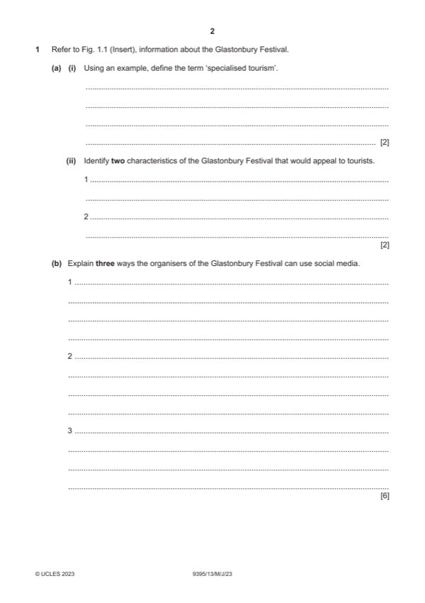

Question 1

Original paper page 2
Part 1(a)(i) — solution
Using an example, define the term ‘specialised tourism’. 2
Award one mark for a correct definition and a second for a correct example.
Specialised tourism is a form of tourism which is geared towards the
interests of the tourists (1) e.g. sports tourism/medical tourism (1)
Credit any other reasonable answer.
Mark points
- Include the ideas shown in the solution above.
Part 1(a)(ii) — solution
- Open air
- Live music
- Dance
- Entertainers
- Exhibitions
- Performing Arts Festivals
- 385 performances
- Camping/forms of accommodation
Mark points
- Open air
- Live music
- Dance
- Entertainers
- Exhibitions
- Performing Arts Festivals
- 385 performances
- Camping/forms of accommodation
Part 1(b) — solution
- Through online reviews (1) which can be posted by visitors and read by
- They can advertise via social media (1) which can be accessed by many
- Complaints can be seen (1) and then responded to very quickly (1)
- Important announcements can be made (1) which can be put out to
Mark points
- Through online reviews (1) which can be posted by visitors and read by
- They can advertise via social media (1) which can be accessed by many
- Complaints can be seen (1) and then responded to very quickly (1)
- Important announcements can be made (1) which can be put out to
Part 1(c) — solution
- Brings in money (1) this provides income to local people (1) and helps
- Encourages businesses (1) which increases employment in the area (1)
- Allows the diversification of tourism (1) in the area which then
Mark points
- Brings in money (1) this provides income to local people (1) and helps
- Encourages businesses (1) which increases employment in the area (1)
- Allows the diversification of tourism (1) in the area which then
Part 1(d) — solution
- marketing strategies which will encourage ticket sales
- put into place special offers to encourage ticket sales
- use research to make sure that the event is taking place at the time
Mark points
- marketing strategies which will encourage ticket sales
- put into place special offers to encourage ticket sales
- use research to make sure that the event is taking place at the time